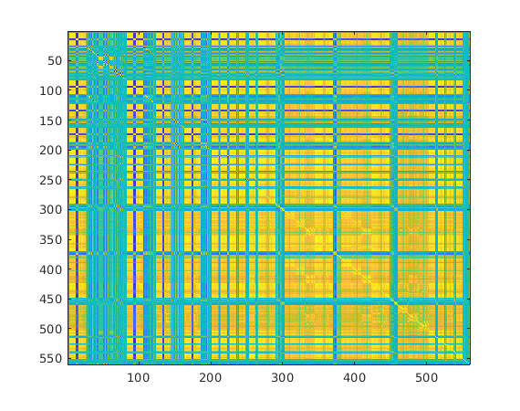
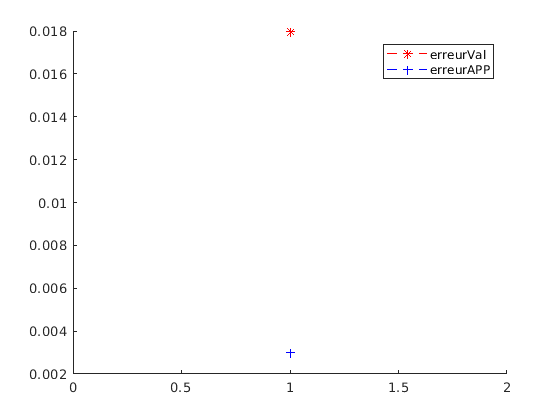

Contents
clear all close all
load("HumanActivityRecognition.mat"); imagesc(corrcoef(X_train)) % Séparation en set d'entraînement, validation et test [Xapp,Yapp,Xval,Yval]=splitdata(X_train,y_train,0.5); %[Xtest,Ytest,Xval,Yval]=splitdata(Xtemp,Ytemp,0.5); % Normalisation [Xapp,Xval,meanapp,stdxapp]=normalizemeanstd(Xapp,Xval); [Xtest]=normalizemeanstd(X_test,[],meanapp,stdxapp);
svm one against all
% Learning and Learning Parameters c = 0.5; lambda = 1e-7; kerneloption= 1; kernel='poly'; verbose = 1;
%---------------------One Against All algorithms----------------
nbclass=6;
[xsup,w,b,nbsv,pos,obj]=svmmulticlassoneagainstall(Xapp,Yapp,nbclass,c,lambda,kernel,kerneloption,0);
Erreur validation
ypred_val=svmmultival(Xval,xsup,w,b,nbsv,kernel,kerneloption);
erreur_val = mean(Yval~=ypred_val);
% Erreur apprentissage
ypred_app=svmmultival(Xapp,xsup,w,b,nbsv,kernel,kerneloption);
erreur_app = mean(Yapp~=ypred_app);
figure(2)
hold on
plot(erreur_val,'r--*');
plot(erreur_app,'b--+');
legend('erreurVal','erreurAPP')
hold off
 Test
A faire uniquement si on doit estimer le C optimal
%[xsup,w,b,nbsv,pos,obj]=svmmulticlassoneagainstall(Xtest,Yapp,nbclass,c,lambda,kernel,kerneloption,0);
ypred=svmmultival(Xtest,xsup,w,b,nbsv,kernel,kerneloption);
cm = confusionmatrice(y_test, ypred)
cm =
491 1 3 1 0 0
28 439 3 1 0 0
7 15 396 0 2 0
0 1 0 425 62 3
0 0 0 17 515 0
0 0 0 0 2 535